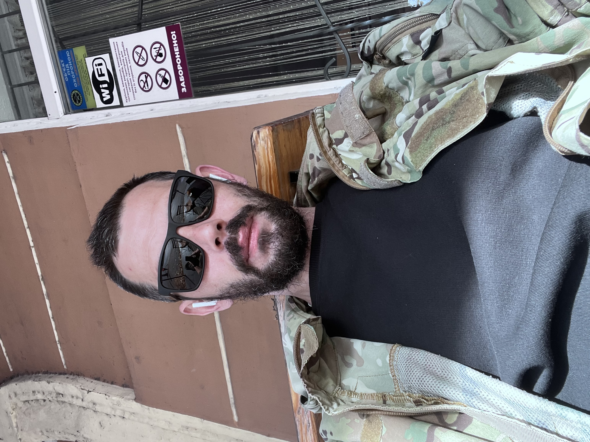

82-ї окремої десантно-штурмової бригади. Поранений, комісований. Сьогодні — творець інтерактивної карти памʼяті, де кожна зірка означає чиєсь імʼя.

Побратими знають мене за позивним «Paskal». Я народився 27 грудня 1985 року — і ніколи не думав, що буду ділити життя на «до» і «після».
Я служив у складі 82-ї окремої десантно-штурмової бригади ДШВ ЗСУ. Був поранений. За станом здоровʼя мене комісували. Війна не відпускає одразу — вона лишається в тілі, у снах і в тій тиші між вибухами, якої більше немає.
Я не герой з плаката. Я звичайна людина, яка зробила вибір — стати між ворогом і домом. І тепер, коли я не тримаю зброю, я тримаю памʼять.
Коли ти більше не в строю, найважче — відчуття, що чиєсь імʼя поступово стирається, і за кілька років про людину памʼятатиме хіба що мати.
Я не захотів із цим миритися. Так народилася «Зоряна Памʼять» — інтерактивна карта України, де кожна світла зірка означає конкретну людину. Не статистику. Не цифру у зведенні. Імʼя, обличчя, історію.
Запали зірку — і вона світитиме на мапі поряд із тисячами інших. Над Києвом, над Маріуполем, над рідним селом. Памʼять, яку ми творимо разом і яку вже не вимкнути.
Патріотизм — це не гучні слова й не прапор у статусі. Це коли ти робиш те, що можеш, там, де ти є.
Для когось це — стояти на позиції. Для іншого — возити гуманітарку, лікувати, донатити, вчити дітей, працювати й платити податки, які годують армію. Любов до України — це дія, а не поза.
Я зробив свою справу зброєю. Тепер роблю її памʼяттю. І вірю: поки ми памʼятаємо своїх загиблих — ми лишаємося народом, який неможливо перемогти.
Україна — це не територія на мапі. Це люди, які за неї стали.
— PaskalЯ підтримую Україну і державу, яку ми разом боронимо. У час війни єдність — це не розкіш, а зброя. Я бачив, як вистоює країна, коли тримається разом, — і не маю наміру розхитувати те, що тримає фронт.
Це мій особистий, громадянський вибір. Я поважаю Збройні Сили, Верховного Головнокомандувача і кожного, хто сьогодні робить внесок у Перемогу. Ми — одна команда. І ми дійдемо до кінця.
Цей проєкт існує не завдяки мені одному. За ним — побратими, волонтери, медики, рідні й друзі, які тримали, коли було найважче. Низький уклін кожному з вас.
Зайди на «Зоряну Памʼять», знайди своїх або засвіти нову зірку. Памʼять жива, поки про неї дбають.
зоряна-памʼять.укр →
Пропозиції щодо співпраці, побажання, спільна праця,
виявлені помилки та будь-яке інше — пишіть: